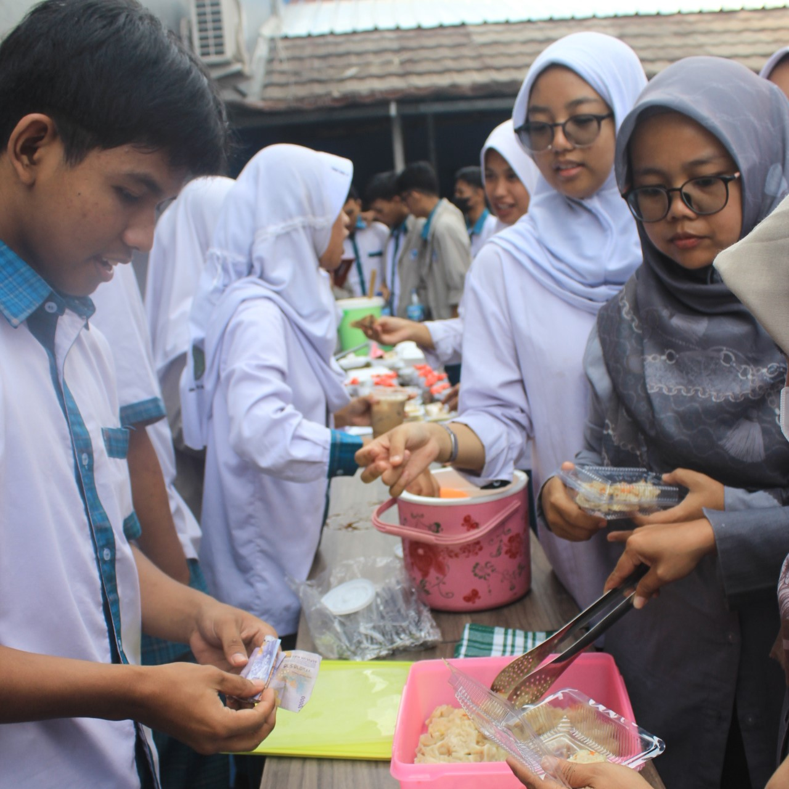

Cileungsi, 23 Mei 2024 -Siswa kelas 10 RPL 1 di BM 3 sukses menggelar kegiatan bazar pada 23 Mei yang lalu. Kegiatan yang diadakan di aula sekolah ini menampilkan berbagai produk kreatif hasil karya siswa, mulai dari makanan dan minuman, kerajinan tangan, hingga produk teknologi sederhana. Bazar ini tidak hanya menjadi ajang untuk mengasah keterampilan wirausaha, tetapi juga mempererat kerjasama dan kekompakan di antara para siswa. Kegiatan bazar ini merupakan bagian dari proyek mata pelajaran Kewirausahaan, yang bertujuan untuk memberikan pengalaman langsung dalam berbisnis. Persiapan dilakukan selama beberapa minggu sebelumnya, di mana siswa dibagi ke dalam beberapa kelompok untuk merencanakan produk yang akan dijual, menghitung modal, dan merancang strategi pemasaran. "Kami belajar banyak tentang bagaimana merencanakan dan menjalankan sebuah usaha, mulai dari konsep hingga eksekusi," ujar salah satu siswa. Bazar kelas 10 RPL 1 ini menampilkan berbagai macam produk kreatif. Ada stand yang menjual makanan dan minuman seperti jus segar, kue-kue buatan sendiri, dan snack unik. Tidak ketinggalan, ada juga hasil proyek mata pelajaran RPL (Rekayasa Perangkat Lunak) Seperti membuat Website penjualan produk. "Kami mencoba untuk menawarkan produk yang berbeda dan menarik bagi semua pengunjung”, ujar salah satu siswa. Bazar ini mendapat sambutan meriah dari seluruh warga sekolah, mulai dari siswa, guru, hingga staf sekolah. Lapangan yang digunakan untuk bazar penuh dengan pengunjung yang antusias mencoba dan membeli produk-produk yang ditawarkan. "Kegiatan seperti ini sangat positif. Siswa bisa belajar banyak hal praktis yang tidak hanya teori di kelas," ujar salah satu guru. Melalui kegiatan bazar ini, siswa belajar tentang berbagai aspek wirausaha, termasuk pengelolaan keuangan, pemasaran, dan pelayanan pelanggan. Selain itu, mereka juga belajar bagaimana bekerja dalam tim dan menyelesaikan masalah yang muncul selama persiapan dan pelaksanaan bazar. "Kami menghadapi beberapa tantangan, seperti mengatur stok dan melayani pelanggan, tapi itu semua menjadi pengalaman yang sangat berharga," ujar salah satu siswa. Pihak sekolah memberikan dukungan penuh terhadap kegiatan ini, baik dalam hal fasilitas maupun pembimbingan. Kepala Sekolah BM 3, menyatakan bahwa kegiatan seperti bazar sangat penting untuk mengembangkan keterampilan non-akademik siswa. "Kami sangat mendukung kegiatan ini karena bisa mengembangkan jiwa wirausaha dan keterampilan sosial siswa," ujarnya. Kegiatan bazar kelas 10 RPL 1 di BM 3 adalah bukti nyata bahwa pendidikan tidak hanya terjadi di dalam kelas. Dengan bimbingan yang tepat dan kesempatan untuk mencoba, siswa dapat mengembangkan keterampilan praktis yang berguna di dunia nyata. Bazar ini diharapkan dapat menjadi inspirasi bagi siswa lain untuk berani mencoba dan mengembangkan kreativitas mereka.
